GitHub and GitHub Pages
GitHub can be considered as the most popular collaboration platform that is used in developing software. Therefore, it is quite important for anyone who is involved in the process of developing software to learn the basics.
GitHub and GIT
GitHub is a provider of Internet hosting for software development and version control using Git. It offers the distributed version control and source code management (SCM) functionality of Git, plus its own features. It provides access control and several collaboration features such as bug tracking, feature requests, task management, continuous integration and wikis for every project.Git is software for tracking changes in any set of files, usually used for coordinating work among programmers collaboratively developing source code during software development.
How to create an account on GitHub
- Go to GitHub in a web browser.
Enter your personal details. In addition to creating a username and entering an email address, you’ll also have to create a password.
Your password must be at least 15 characters in length or at least 8 characters with at least one number and lowercase letter.
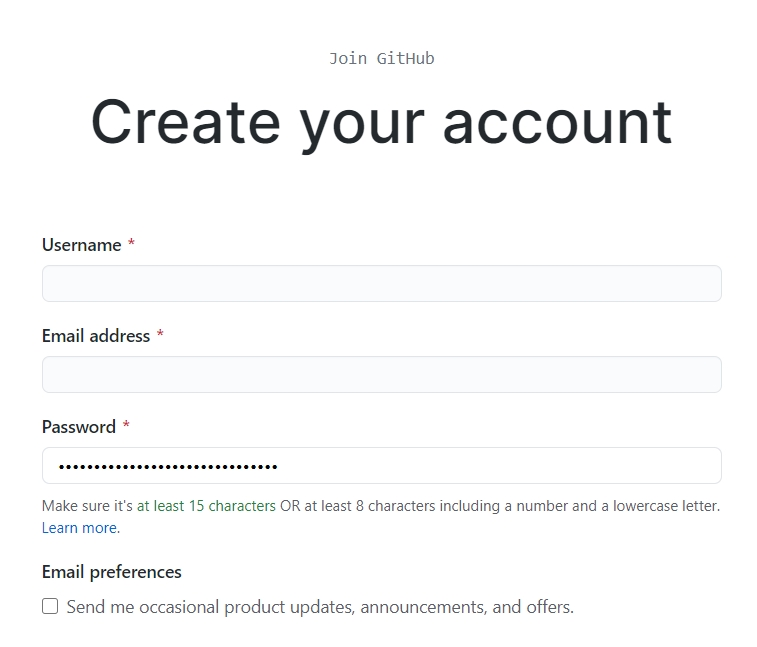- Click the Create an account button.
Complete the CAPTCHA puzzle. The instructions vary by puzzle, so just follow the on-screen instructions to confirm that you are a human.
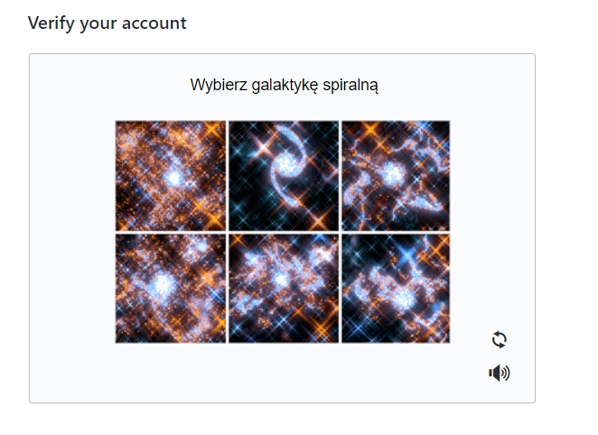- Click the Choose button for your desired plan. Once you select a plan, GitHub will send an email confirmation message to the address you entered.
- Click the Verify email address button in the message from GitHub. This confirms your email address and returns you to the sign-up process.
- Review your plan selection and click Continue. You can also choose whether you want to receive updates from GitHub via email by checking or unchecking the “Send me updates” box.
- Select your preferences and click Submit. GitHub displays a quick survey that can help you tailor your experience to match what you’re looking for. Once you make your selection, you’ll be taken to a screen that allows you to set up your first repository.
How to create a repository
Go to the GitHub website, look in the upper right corner, and click the + sign and then click “New repository.”
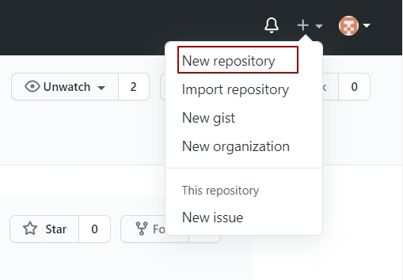- Name the repository, and add a quick description.
- Decide whether you want to have a public or a private repository.
- Click Initialize this repository with a README if you want to include the README file.
- Click Create repository
How to make changes to your README file
- Go to your repository.
- Click the name of the file to bring up that file (for example, click README.md to go to the readme file).
Click the pencil icon in the upper right corner of the file and make some changes.
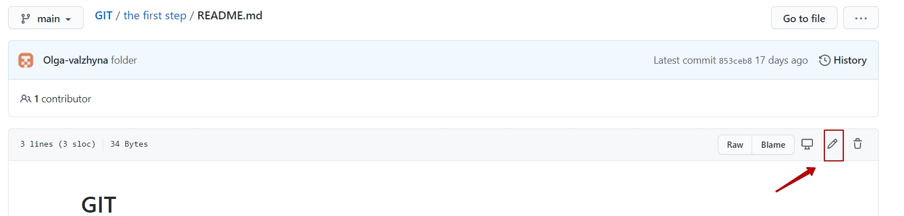- Write a short message in the box that describes the changes you made (and an extended description if you want).
Click the Commit changes button.
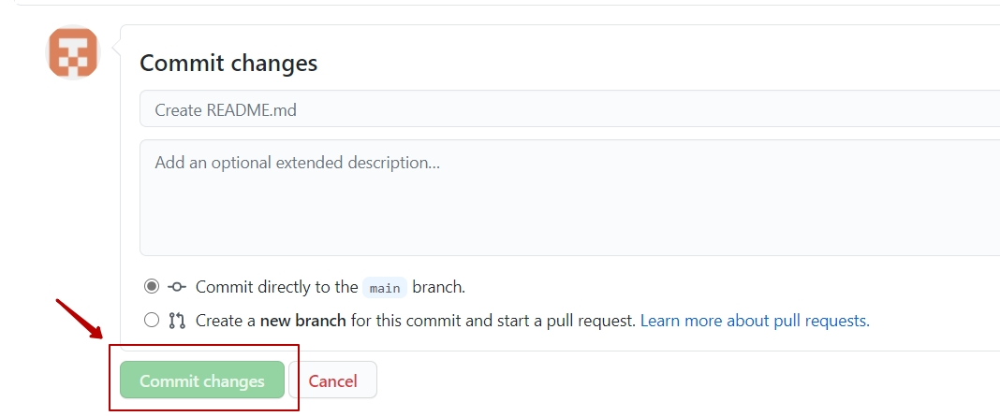
How to fork a repository
- Search for the repository that you need in the search bar.
- Select the one you need among the repositories.
Press Fork button to initiate the git forking process.
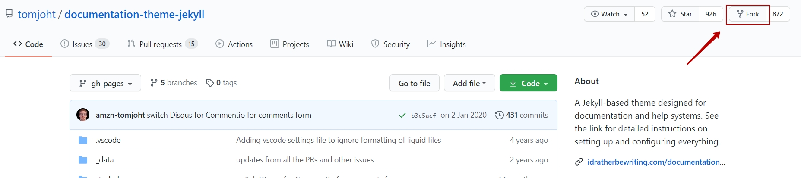- The repository will be forked to your account instantly. This can be seen by your username after forking the repository.
- If you want to store the repo on your local machine, on the right side of the screen, below the Contributors tab, you’ll see a green button that says Clone or Download. Go ahead and click that.
How to invite collaborators to your repository
Under your repository name, click Settings.
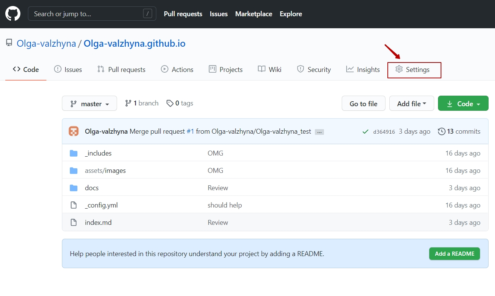In the left sidebar, click Manage access.
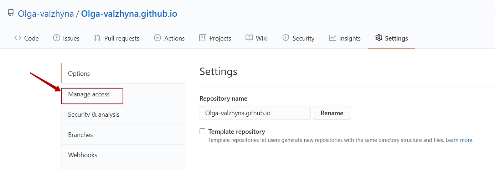Click Invite a collaborator.
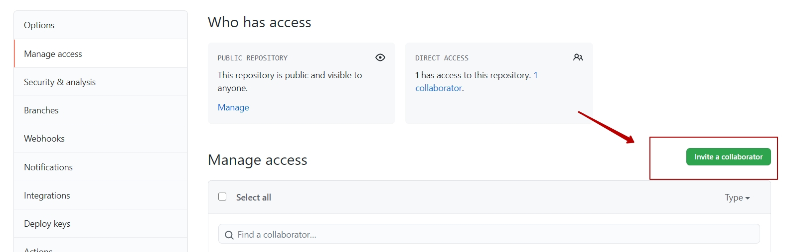In the search field, start typing the name of the person you want to invite, then click a name in the list of matches.
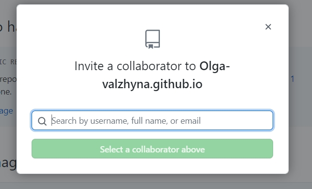- Click Add NAME to REPOSITORY.
- The users will receive an email inviting them to the repository. Once they accept your invitation, they will have collaborator access to your repository.
GitHub Pages
GitHub Pages is a service that hosts static websites, which can generate websites directly from source Markdown files hosted on a GitHub repository. If you know how to use GitHub and you need to create a simple webpage, you can’t do better than GitHub Pages. It is an example of the most basic way of hosting a website for free on the Internet. Just create a new repository on GitHub, commit the Markdown files, and enable the GitHub Pages feature. In order to start working with GitHub Pages, follow the instruction.
Create a new public repository named username.github.io, where username is your username (or organization name) on GitHub.
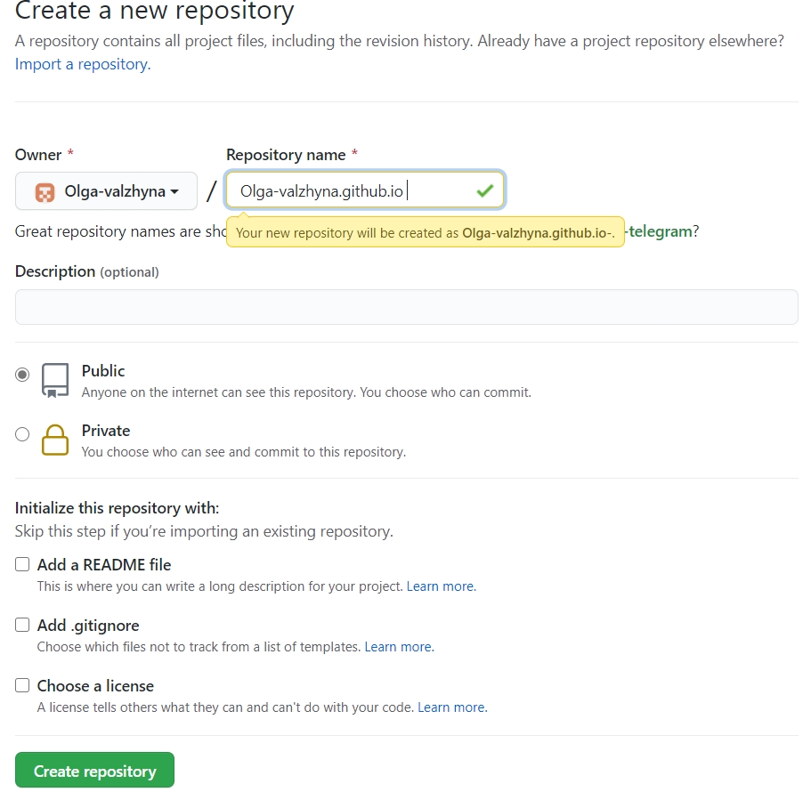Clone the new repository with the help of GitHub Desktop to your local folder.
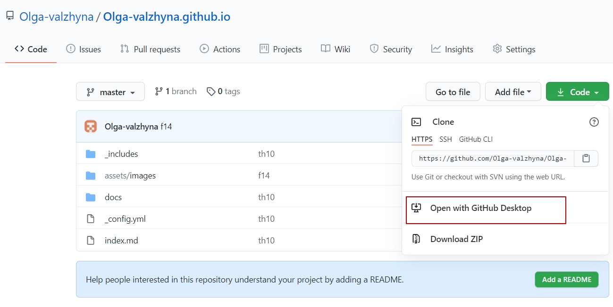- Enter the project folder and add an .md file, using Studio Visual Code(or any other text editor).
Check changes in GitHub Desktop. Commit and push them.
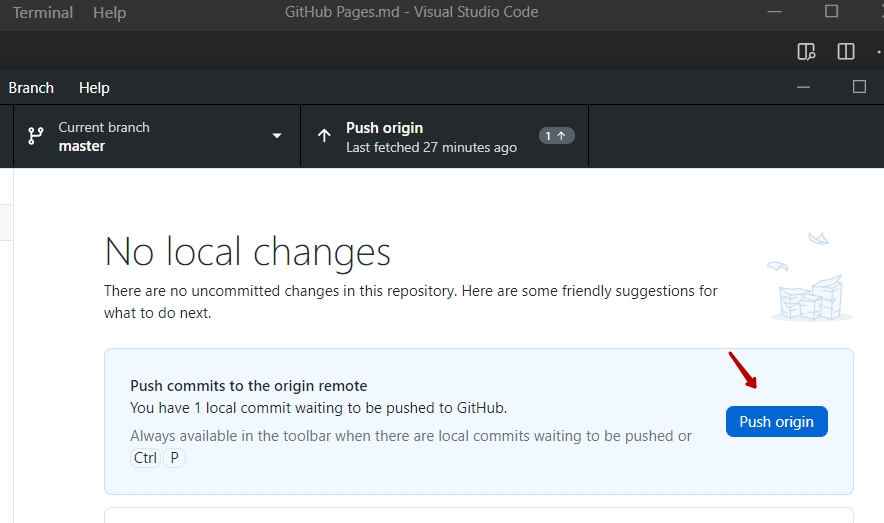- Go to https://username.github.io.